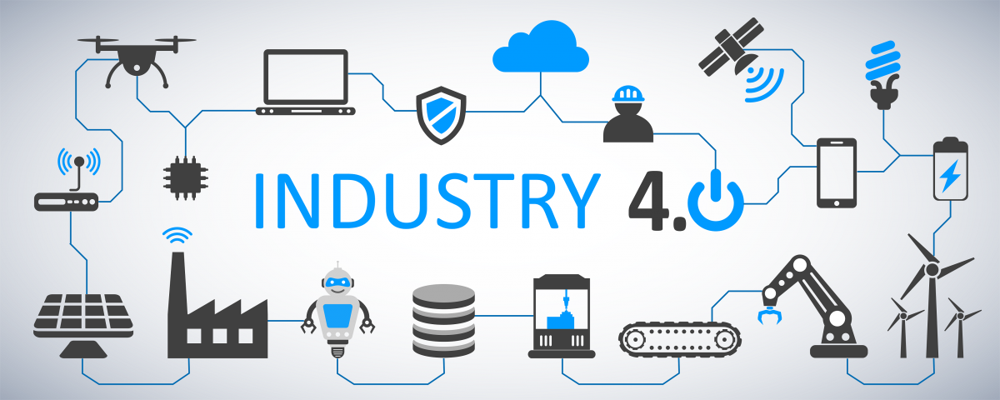

My Blogs
Industry 4.0
Industry 4.0, also known as the Fourth Industrial Revolution, focuses on interconnectivity, automation, machine learning, and real-time data. It integrates physical production with digital technology, creating a connected ecosystem for manufacturing and supply chain management. Key components include:
- Cyber-Physical Systems (CPS): Integrates computational and physical processes.
- Internet of Things (IoT): Connects devices and systems to exchange data and enable automation.
- Big Data and Analytics: Processes and analyzes large volumes of data to derive insights and optimize processes.
- Cloud Computing: Provides scalable and on-demand access to computing resources over the internet.
- Artificial Intelligence (AI) and Machine Learning (ML): Enables machines to learn and adapt through data-driven algorithms.
- Additive Manufacturing (3D Printing): Builds objects layer by layer based on digital models, offering customization and efficiency.
- Augmented Reality (AR) and Virtual Reality (VR): Enhances perception and interaction with digital information and virtual environments.
The technical architecture involves sensors, edge computing, Industrial IoT (IIoT), data analytics platforms, and cybersecurity. Benefits include increased efficiency, cost reduction, enhanced quality, improved safety, and innovation. However, challenges such as integration complexity, data management, skills gaps, initial investment costs, and regulatory compliance must be addressed. The future of Industry 4.0 is promising, driven by ongoing technological advancements and broader adoption. Success hinges on strategic planning, infrastructure investment, and continuous workforce training. This revolution is set to enhance industrial productivity and spur innovation and growth in the global economy.
Industry 4.0
WEB 3.0
Web 3.0 represents the third generation of internet services, focusing on decentralization and user empowerment, contrasting with the centralized nature of Web2. Key components include:
- Blockchain Technology:
- Utilizes decentralized ledgers and smart contracts for security and transparency.
- Enables peer-to-peer transactions and data storage without intermediaries.
- Cryptocurrencies and Tokens:
- Function as digital currencies and assets within decentralized ecosystems.
- Facilitate transactions, investments, and incentivization mechanisms.
- Decentralized Applications (dApps):
- Run on peer-to-peer networks, leveraging blockchain for secure and autonomous functionality.
- Examples include finance, gaming, and social media platforms.
- Decentralized Finance (DeFi):
- Removes intermediaries from financial services like lending, borrowing, and trading.
- Enhances accessibility and efficiency while minimizing costs.
- Decentralized Autonomous Organizations (DAOs):
- Governed by community consensus and smart contracts, enabling transparent and democratic decision-making.
- Operate without centralized control, promoting inclusivity and trust.
Web 3.0
BLOCKCHAIN TECHNOLOGY (DISCUSSION)
Blockchain technology has emerged as a revolutionary innovation with the potential to transform numerous industries, ranging from finance to supply chain management. But what exactly is blockchain, and how does it function? Here’s a comprehensive overview of blockchain technology and its wide-ranging implications.
Understanding Blockchain
At its core, blockchain is a decentralized digital ledger that records transactions across a network of computers, ensuring data transparency, security, and immutability. Unlike traditional databases, blockchain operates without a central authority, making it a distributed system.How Blockchain Works
Blockchain technology is composed of blocks that store data. Each block contains a list of transactions and is linked to the previous block through a cryptographic hash, forming a chain. The process can be simplified into the following steps:- Transaction Initiation: A transaction is requested and broadcasted to a network of computers (nodes).
- Verification: The network of nodes validates the transaction using consensus mechanisms like Proof of Work (PoW) or Proof of Stake (PoS).
- Block Creation: Once verified, the transaction is combined with other transactions to form a new block.
- Blockchain Update: The new block is added to the existing blockchain, ensuring that the transaction is permanent and unalterable.
- Completion: The transaction is successfully completed and recorded across the network.
Applications of Blockchain Technology
Blockchain technology’s applications extend far beyond cryptocurrency. Key areas include:- Finance and Banking: Blockchain can streamline financial transactions by eliminating intermediaries, reducing costs, and enhancing security. Cryptocurrencies like Bitcoin and Ethereum exemplify blockchain’s application in finance.
- Supply Chain Management: Blockchain ensures transparency and traceability in supply chains, allowing stakeholders to track goods from production to delivery, thereby reducing fraud and ensuring authenticity.
- Healthcare: In healthcare, blockchain can secure patient records, making data accessible only to authorized individuals and facilitating the sharing of medical data across institutions while maintaining privacy.
- Voting Systems: Blockchain can revolutionize voting by providing a transparent and tamper-proof system, ensuring that each vote is securely recorded and counted, thus enhancing the integrity of the electoral process.
- Real Estate: Blockchain simplifies property transactions by reducing the need for intermediaries and ensuring transparent record-keeping, streamlining the process of buying, selling, and managing real estate.
Challenges and Future Directions
Despite its potential, blockchain technology faces several challenges:- Scalability: Current blockchain networks struggle with processing a high volume of transactions quickly.
- Energy Consumption: Consensus mechanisms like PoW require significant computational power, leading to high energy consumption.
- Regulatory Uncertainty: The lack of clear regulations can hinder the widespread adoption of blockchain technology.
- Interoperability: Different blockchain networks often operate in silos, making integration challenging.
Blockchain technologies